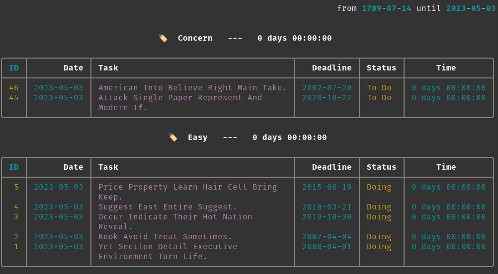

Getting Started¶
Warning
Making sure you have Timerdo entry point in your PATH. If you are not sure,
go back to installing Timerdo.
Adding Your First Task¶
The very first step when you start using Timerdo is to write down your tasks and it's simple as:
Timerdo runs silently. No return is a good return. Your first task will getid = 1, the next one id = 2 and so on...
I'll show you in a bit how to retrieve your tasks. But let's first work on in your first task.
Starting The Timer¶
To start a timer you need just your task id. Let's say your id is 1, as you're
starting a timer for the first task you've just written to your to do list.
Stopping The Timer¶
To stop the timer you don't need any information, Timerdo already knows what to do. I mean, Timerdo almost know what to do. It will raise a question about whether or note the task is done.
No return. You already know...Info
We already know that Timerdo runs silently, but let's see what happens if something goes wrong. Let's say you don't know you stopped the timer or not and you try to stop it again:
Timerdo try to catch errors and exceptions and only gives you back a useful message.Reporting your tasks¶
Now that you already know how Timerdo works, let's see how you can read your data.
Info
In real life the returns are much prettier as you can see in the example below. However, I prefer keep it as simple as code blocks and not clutter too much the documentation. 
Digging into the report¶
Let's start by the highlights outside the table. the line 4 show us the period of timers Timerdo took into account to aggregate times. which means that all timers between those dates were considered in the report.
The 🏷️ in line 7 is a tag mark. You can tag your tasks and when
Timerdo report them it will break the report down per tags given, also giving you the time
spent per tag. You can also filter which tags you are interested in  .
.
In the table header you have two more information: Deadline and Status. Deadline is empty, but Status is always defaults to To Do when you create a new task and changes to Doing when you start the timer for the first time.
Now that you know the basics, you can start using Timerdo. However, Timerdo has more features that you might already be missing. Let's dig into all this functionalities in the next section.